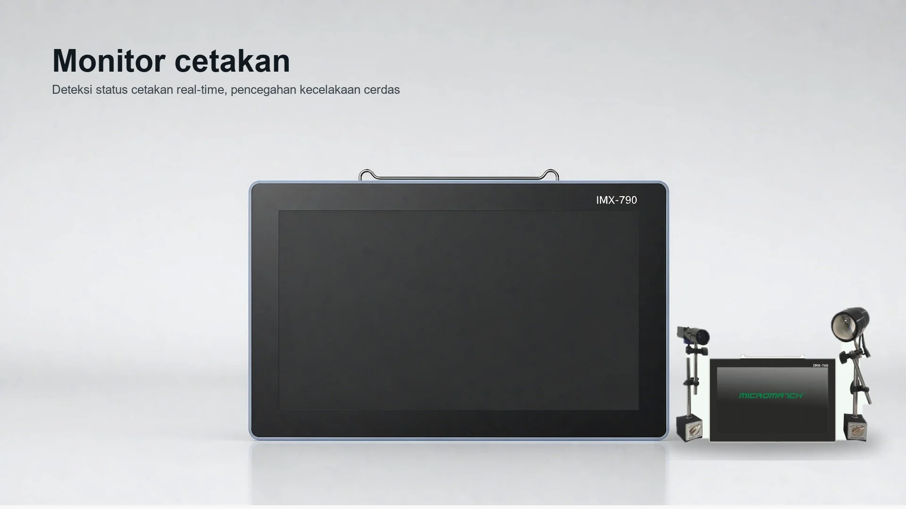

Lihat produk →Solusi inspeksi visi mesin industri dan otomasi
Kunshan Maibida Intelligent Equipment Co., Ltd. berfokus pada monitor cetakan, sensor visi AI, mesin sortir visi, sistem pengumpan dan penataan baki fleksibel, serta peralatan inspeksi inline, dan menyediakan solusi inspeksi visi mesin yang stabil dan efisien untuk produksi injeksi, konektor, komponen elektronik, dan komponen presisi.
Inspeksi visi untuk berbagai skenario
Mencakup inspeksi tampilan, dimensi, karakter, posisi, kekurangan material, burr, dan status perakitan.
Integrasi otomasi fleksibel
Mengonfigurasi kamera, sumber cahaya, dan mekanisme otomasi berdasarkan spesifikasi produk, ritme produksi, dan kondisi di lokasi.
Data produksi tertelusur
Mendukung penyimpanan hasil inspeksi, gambar alarm, dan data produksi sebagai dasar analisis kualitas.